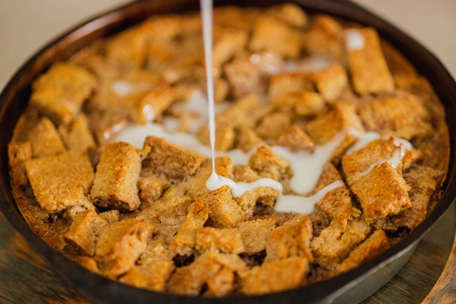

Bread Pudding

Photo by Mac Mullins: Pexels
Best Ever Bread Pudding
You will enjoy this delicious dessert with the most wonderful texture accompanied by notes of cinnamon, nutmeg and
vanilla. It will make your house smell like warm heaven and your tastebuds cry! Enjoy!
Ingredients:
Bread Pudding
- 2 cups of whole milk (or 2cups half & half)
- 1/4 cup of butter
- 2/3 cup of brown sugar (light or dark, depending on taste preference)
- 3 eggs
- 2 teaspoons of cinnamon
- 1/4 teaspoon of ground nutmeg
- 1 teaspoon of vanilla extract
- 1 dash of salt
- 3 cups of bread, cut into small pieces (french bread works best)
- 1/2 cup of raisins (optional)
Cream Sauce
- 1 cup of whole milk
- 2 tablespoons of butter
- 1/3 cup of granulated sugar
- 1 teaspoon of vanilla
- 1 tablespoon of flour
- 1 dash of salt
Directions:
Bread Pudding Steps
- Heat milk in a medium saucepan, over medium heat until the top films over. Remove from heat.
- Combine butter with the milk, stirring until butter is melted. Cool to lukewarm.
- In a separate bowl, combine sugar, eggs, cinnamon, nutmeg and vanilla. Beat with electric mixer at medium speed
for 1 minute, while slowly adding milk mixture.
- Place bread in a lightly greased 1 1/2 quart casserole dish.
- Sprinkle with raisins if desired.
- Pour batter on top of bread.
- Bake at 350 degrees F for 45 to 50 minutes or until set. Serve Warm.
Cream Sauce Steps
- In a small saucepan, mix sauce ingredients together.
- Bring sauce to a boil over medium heat for 3-4 minutes, stirring constantly.
- Set aside for 5 minutes, then pour over warm bread pudding.